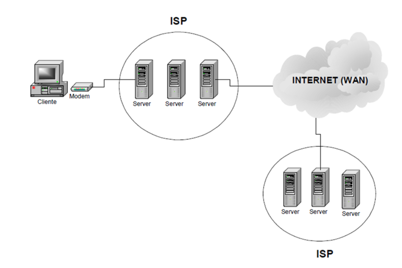
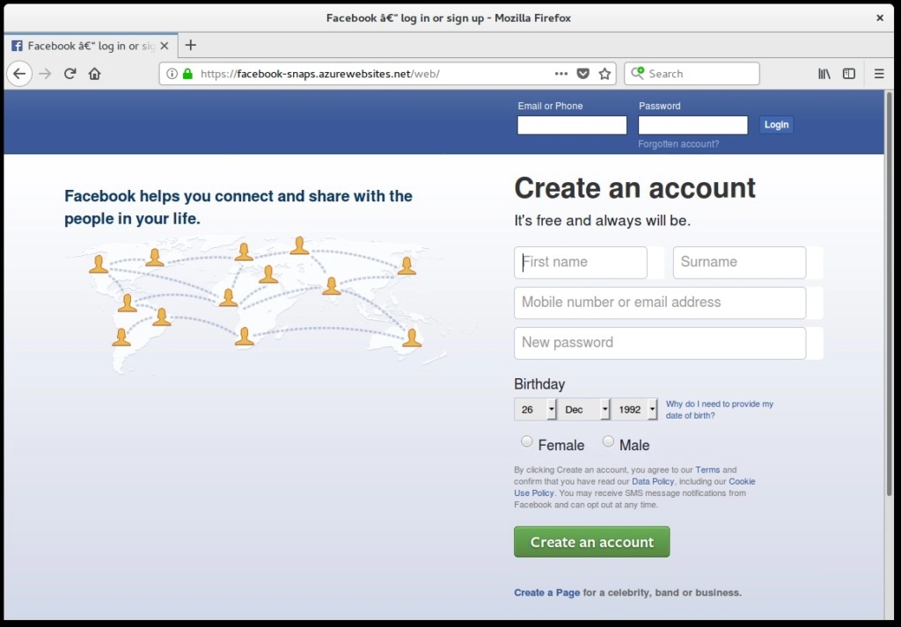
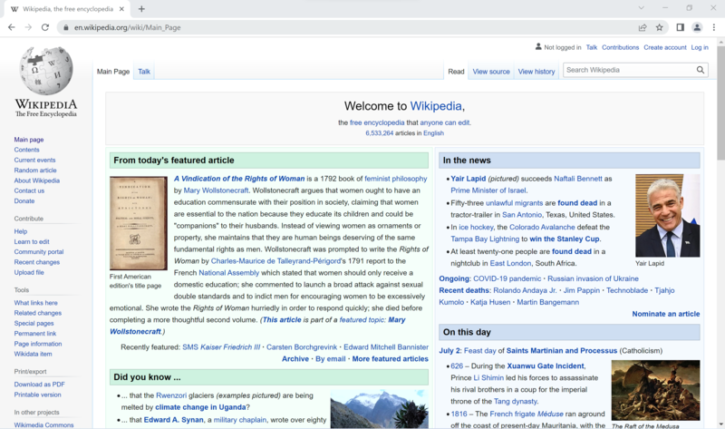
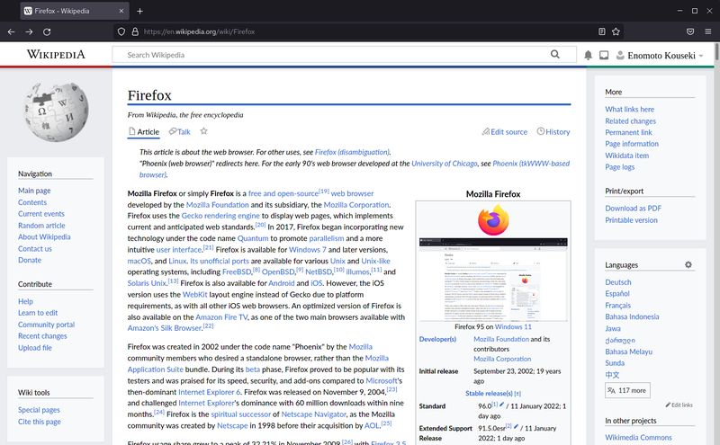
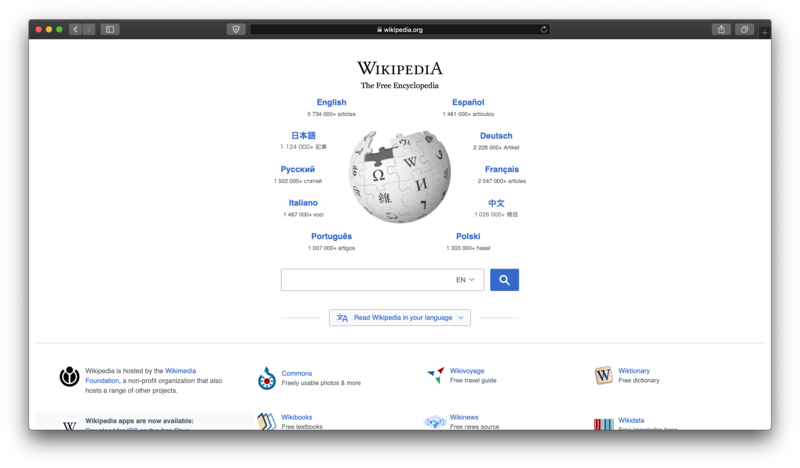
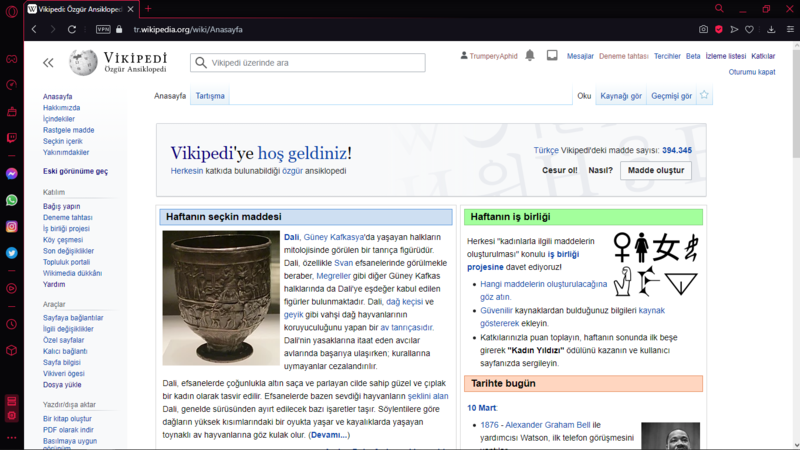
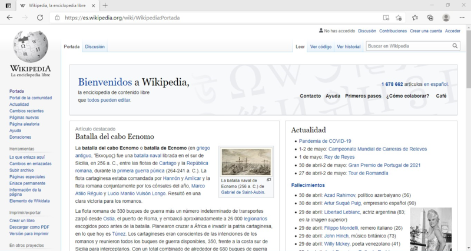

Internet
El internet es una red global de computadoras que se conectan entre sí mediante dispositivos llamados routers y switches. Cada vez que te conectás a internet, tu dispositivo (ya sea una computadora, tableta o teléfono) se comunica con un proveedor de servicios de internet (ISP), que le asigna una dirección única llamada dirección IP. Esta dirección IP te permite comunicarte con otros dispositivos en la red, como servidores web y otros dispositivos conectados a internet.
Cuando querés visitar un sitio web, tu dispositivo envía una solicitud al servidor web que aloja a ese sitio. La solicitud se realiza a través de una serie de protocolos o reglas de comunicación, incluyendo HTTP (Hypertext Transfer Protocol) y TCP/IP (Transmission Control Protocol/Internet Protocol), que permiten que la información se transfiera de forma segura y confiable entre los dispositivos.
Una vez que se establece una conexión, el servidor web envía la información solicitada de vuelta a tu dispositivo en forma de datos, que pueden incluir texto, imágenes, video y otros tipos de contenido. Luego, tu dispositivo ensambla estos datos en una página web que puedes ver y utilizar.
El internet también permite la comunicación en tiempo real a través de diferentes aplicaciones, como el correo electrónico, las redes sociales, la mensajería instantánea y la videoconferencia. Estas aplicaciones utilizan protocolos especiales para asegurarse de que los datos se envíen y reciban de manera segura y eficiente.
Navegación en internet
Navegar por internet es el acto de explorar y buscar información en la red global de computadoras conocida como internet. Cuando navegamos por internet, utilizamos una pieza de software llamado navegador web, que nos permite ver y acceder a diferentes sitios web, y nos permite interactuar con diferentes aplicaciones y servicios en línea.
Cuando abrimos un navegador web, podemos escribir la dirección de un sitio web específico en la barra de direcciones, o buscar en un motor de búsqueda como Google Search para encontrar información sobre un tema en particular. Una vez que encontramos el sitio web que deseamos visitar, podemos hacer clic en un enlace o escribir la dirección en la barra de direcciones para acceder al mismo.
Una vez que estamos en un sitio web, podemos navegar por sus páginas haciendo clic en enlaces o botones. También podemos interactuar con diferentes elementos en el sitio, como formularios de registro, botones de reproducción de video, imágenes interactivas y mucho más.
Navegar por internet también nos permite conectarnos con otras personas a través de diferentes aplicaciones y servicios en línea. Podemos enviar correos electrónicos, chatear en línea, compartir fotos y videos, y mucho más.
Estructura de una dirección web
Una dirección web, también conocida como URL (Uniform Resource Locator), es una cadena de caracteres que identifica la ubicación de un recurso en internet. La estructura de una dirección web se divide en varias partes clave, que se explican a continuación:
-
Protocolo:
El protocolo indica cómo se comunicará el navegador con el servidor web. Por ejemplo, el protocolo más común es HTTP (Hypertext Transfer Protocol), que se utiliza para sitios web normales. También existe HTTPS (HTTP Secure), que se utiliza para sitios web que requieren una conexión segura.
-
Dominio:
El dominio es el nombre que identifica a un sitio web específico. Por ejemplo, en la dirección "https://www.google.com/", "google.com" es el dominio.
La jerarquía en el dominio se refiere a cómo se organiza el nombre de un sitio web en Internet. El nombre del dominio se divide en varias partes, separadas por puntos, y cada una de ellas tiene un significado específico. En general, la jerarquía de un nombre de dominio se organiza desde el nivel más alto hasta el nivel más bajo, como se explica a continuación:
-
Dominio de nivel superior (TLD):
Es la parte final del nombre del dominio, después del último punto. Los TLD más comunes son .com, .org, .net, .edu y .gov. Cada TLD tiene una función específica, por ejemplo, los sitios web .edu están reservados para instituciones educativas y los sitios web .gov están reservados para el gobierno.
-
Dominio de segundo nivel:
Es la parte del nombre del dominio que se encuentra justo debajo del TLD. Por ejemplo, en "google.com", "google" es el dominio de segundo nivel.
-
Subdominios:
Son subdivisiones opcionales de un dominio de segundo nivel que se utilizan para organizar y distinguir diferentes secciones de un sitio web. Por ejemplo, en "maps.google.com", "maps" es un subdominio que indica que estamos en la sección de mapas del sitio web de Google.
-
Dominio de nivel superior (TLD):
-
Jerarquía de rutas:
La jerarquía de rutas describe la estructura del sitio web y cómo se organizan sus páginas. La ruta se compone de segmentos de texto separados por barras diagonales (/). Cada segmento representa una sección de la jerarquía del sitio web, desde el nivel más alto hasta el nivel más bajo. Por ejemplo, en la dirección "https://www.google.com/search/chatbot", la ruta es "search/chatbot", lo que indica que estamos en la sección "search" del sitio web de Google y estamos accediendo a una página que se encuentra en la sección "chatbot".
-
Parámetros:
Los parámetros son información adicional que se envía al servidor web para personalizar la solicitud. Por ejemplo, en la dirección "https://www.google.com/search?q=chatbot", "q=chatbot" es un parámetro que indica que se está buscando la palabra "chatbot".
Lo que acabás de leer parece ser muy técnico y no aplicable a la vida cotidiana. En realidad, lo que me interesa que recuerdes de esto es lo que se refiere al dominio. Ya vamos a hablar más en profundidad sobre seguridad informática pero, por el momento, te voy a contar lo siguiente: Una de las formas más usuales en las que se suele hackear una cuenta es a través de la utilización de páginas falsas que simulan ser las auténticas y, en la mayoría de las veces la única forma de darnos cuenta si nos encontramos frente a una página auténtica o frente a una falsificación es fijándonos en el dominio de la página para corroborar que estamos en el sitio correcto.
Navegadores
Un navegador web es un programa que permite a los usuarios acceder y visualizar contenido en la web. Es decir, el navegador es el software que usamos para navegar por Internet. Algunos de los navegadores web más populares son Google Chrome, Mozilla Firefox, Safari, Opera y Microsoft Edge.
    Los navegadores web permiten a los usuarios interactuar con páginas web, buscar y acceder a información, reproducir videos, escuchar música y mucho más. Cada navegador web tiene su propio conjunto de características y funcionalidades, pero todos ellos comparten algunas características básicas, como la capacidad de mostrar páginas web y permitir la interacción con ellas.
Los navegadores web funcionan mediante el uso del protocolo HTTP (Hypertext Transfer Protocol) para solicitar y recibir páginas web de servidores web remotos. Cuando un usuario ingresa una dirección URL en la barra de direcciones del navegador, el navegador envía una solicitud al servidor web para obtener la página web correspondiente. El servidor web responde enviando la página solicitada al navegador, que la muestra al usuario.
Además, los navegadores web también pueden utilizar extensiones y complementos para mejorar su funcionalidad y personalizar la experiencia del usuario. Por ejemplo, algunos navegadores tienen complementos para bloquear anuncios o para descargar videos de sitios web.
Diferencia entre un navegador y un buscador
Aunque a menudo se utilizan indistintamente, un navegador web y un buscador son dos cosas diferentes en Internet.
Un navegador web es un programa que permite a los usuarios acceder y visualizar contenido en la web. Es decir, el navegador es el software que usamos para navegar por Internet. Algunos de los navegadores web más populares son Google Chrome, Mozilla Firefox, Safari, Opera y Microsoft Edge.
Por otro lado, un buscador es un sitio web que permite a los usuarios buscar información en la web. Los buscadores tienen un motor de búsqueda que rastrea la web para encontrar sitios web y páginas que coincidan con las palabras clave o frases que se ingresan en la barra de búsqueda. Algunos de los buscadores más populares son Google, Bing, Yahoo y DuckDuckGo.
La principal diferencia entre un navegador web y un buscador es que el navegador web es el software que usamos para acceder y visualizar contenido en la web, mientras que el buscador es una herramienta que utilizamos para buscar información en la web. En otras palabras, los navegadores web son la plataforma que utilizamos para interactuar con la web, mientras que los buscadores son una herramienta específica que utilizamos para encontrar contenido en la web.
Descarga de archivos a través de internet
Descargar archivos de Internet puede ser una tarea muy útil y necesaria, pero también puede ser peligroso si no se toman ciertos recaudos de seguridad. A continuación, te proporciono algunos consejos para mantener tu equipo seguro al descargar archivos de Internet:
-
Descarga de sitios web confiables:
Asegurate de descargar archivos de sitios web confiables y legítimos. Los sitios web más seguros suelen ser aquellos que utilizan el protocolo HTTPS, que es una forma más segura de comunicación en línea.
-
Verifica la fuente del archivo:
Asegurate de que el archivo que estás descargando proviene de una fuente confiable y legítima. Evita descargar archivos de sitios web que no conoces o que tienen una reputación dudosa.
-
Utiliza software antivirus:
Utilizá un software antivirus actualizado para escanear los archivos antes de abrirlos. Esto puede ayudarte a detectar y eliminar cualquier virus o malware que pueda estar en el archivo.
-
Leé las reseñas y comentarios:
Leé las reseñas y comentarios de otros usuarios sobre el archivo que estás descargando. Esto te dará una idea de la calidad y seguridad del archivo.
-
No hagas clic en enlaces sospechosos:
No hagas clic en enlaces sospechosos o desconocidos en los sitios web de descarga. Estos enlaces pueden llevar a sitios web maliciosos que pueden infectar tu equipo con virus o malware.
-
Actualiza tu software:
Asegúrate de tener tu software actualizado con las últimas actualizaciones de seguridad. Esto te ayudará a mantener tu equipo protegido contra cualquier vulnerabilidad conocida.
Redes sociales
Las redes sociales son plataformas en línea que permiten a las personas conectarse y compartir información con amigos, familiares y otros usuarios de Internet. Las redes sociales permiten a los usuarios crear perfiles personales, publicar contenido como fotos y videos, y comunicarse con otros usuarios a través de mensajes, comentarios y chat en línea.
Algunas de las redes sociales más populares son Facebook, Instagram, Twitter, TikTok y Snapchat. Cada plataforma de redes sociales tiene sus propias características y funciones únicas, pero todas se basan en la idea de conectar a las personas a través de Internet.
Las redes sociales también se utilizan para difundir noticias y compartir información sobre eventos y causas importantes. Los usuarios pueden seguir a organizaciones benéficas y políticos, y apoyar causas importantes a través de las redes sociales.
Sin embargo, es importante ser consciente de los riesgos de las redes sociales. Los usuarios deben tener cuidado al compartir información personal y proteger su privacidad en línea. También deben ser conscientes de los peligros del acoso en línea y el ciberacoso.
Facebook es una plataforma en línea que se ha convertido en una de las redes sociales más populares del mundo. Fundada en 2004 por Mark Zuckerberg y otros compañeros de la Universidad de Harvard, Facebook comenzó como un sitio web exclusivo para estudiantes universitarios y se expandió rápidamente a otros campus universitarios antes de abrirse al público en general en 2006.
Desde entonces, Facebook ha experimentado un crecimiento exponencial en todo el mundo, con miles de millones de usuarios activos que comparten fotos y videos, publican actualizaciones de estado, se conectan con amigos y familiares, y se unen a grupos y páginas en una amplia variedad de temas. La plataforma ha revolucionado la forma en que la gente se comunica y conecta en línea, y ha transformado la cultura popular y la forma en que se comparte y se consume información.
Facebook no solo es una herramienta de comunicación y conexión social, sino también una plataforma de negocios. La empresa ha desarrollado herramientas publicitarias avanzadas para permitir a los anunciantes llegar a audiencias específicas y personalizar sus campañas de marketing. Facebook también ha lanzado una serie de funciones de comercio electrónico para permitir a los usuarios comprar y vender artículos dentro de la plataforma, lo que ha dado lugar a un nuevo sector de comercio social en línea.
Sin embargo, Facebook también ha sido objeto de controversias y críticas en relación con su manejo de la privacidad y la seguridad de los usuarios. La plataforma ha sido criticada por permitir la propagación de noticias falsas y desinformación, y ha enfrentado una mayor regulación y escrutinio por parte de los gobiernos y los reguladores en todo el mundo. A pesar de estas críticas, Facebook sigue siendo una herramienta extremadamente popular para la comunicación y la conexión social en línea, y continúa evolucionando para adaptarse a las necesidades y expectativas cambiantes de sus usuarios.
YouTube
YouTube es una plataforma en línea que permite a los usuarios subir, ver y compartir videos en línea. Fundada en 2005 por tres ex empleados de PayPal, Chad Hurley, Steve Chen y Jawed Karim, YouTube se convirtió rápidamente en una de las plataformas de video más populares del mundo.
La plataforma permite a los usuarios ver y compartir una amplia variedad de videos, desde contenido de entretenimiento hasta educativo y de noticias. Los usuarios también pueden crear sus propios canales y subir sus propios videos, lo que ha llevado a la creación de una amplia comunidad de creadores de contenido.
YouTube es una herramienta popular para la promoción y el marketing en línea, y ha sido utilizado por una amplia variedad de marcas y celebridades para llegar a audiencias globales. La plataforma también ha evolucionado para incluir funciones de transmisión en vivo y en directo, así como herramientas de edición y efectos especiales.
Sin embargo, YouTube también ha sido objeto de críticas por la propagación de contenido inapropiado o peligroso, así como por su impacto en la privacidad y la seguridad de los usuarios. La plataforma ha trabajado para abordar estas preocupaciones, incluyendo la eliminación de contenido peligroso y la implementación de medidas para proteger la privacidad de los usuarios.
A pesar de estas preocupaciones, YouTube sigue siendo una herramienta extremadamente popular para la creación, el consumo y la distribución de contenido en línea. La plataforma ha influido significativamente en la cultura popular y ha dado lugar a una nueva generación de creadores de contenido y personalidades en línea.
WhatsApp es una aplicación de mensajería instantánea para teléfonos inteligentes y otros dispositivos móviles. Fue fundada en 2009 por dos ex empleados de Yahoo, Jan Koum y Brian Acton, y adquirida por Facebook en 2014.
La aplicación permite a los usuarios enviar y recibir mensajes de texto, llamadas de voz y video, así como compartir fotos, videos y documentos. Los usuarios también pueden crear grupos de chat y compartir contenido con múltiples contactos al mismo tiempo. WhatsApp es una herramienta de comunicación muy popular en todo el mundo, con más de 2 mil millones de usuarios activos en más de 180 países.
Una de las principales ventajas de WhatsApp es su enfoque en la privacidad y la seguridad de los datos. La aplicación utiliza el cifrado de extremo a extremo, lo que significa que los mensajes y las llamadas solo pueden ser vistos y escuchados por los remitentes y los destinatarios, y no pueden ser interceptados por terceros. Además, la aplicación no recopila información personal del usuario y no muestra anuncios publicitarios.
WhatsApp ha evolucionado para incluir una amplia variedad de características y herramientas, como la función de "Estados" que permite a los usuarios compartir actualizaciones de estado temporales, similares a las historias de Instagram y Snapchat. También ha agregado características de comercio electrónico y pagos en línea, lo que permite a los usuarios comprar productos y servicios directamente a través de la aplicación.
WhatsApp se ha convertido en una herramienta esencial para la comunicación personal y profesional en todo el mundo, y ha sido particularmente importante durante la pandemia de COVID-19, ya que ha permitido a las personas mantenerse en contacto a pesar de las restricciones de movimiento y el distanciamiento social.
Instagram es una aplicación móvil y una red social en línea que se ha convertido en una de las plataformas más populares para compartir fotos y videos. Fundada en 2010 por Kevin Systrom y Mike Krieger, Instagram comenzó como una aplicación para compartir fotos, pero desde entonces se ha expandido para incluir videos, historias en vivo y una amplia variedad de herramientas de edición y filtro.
La plataforma se ha convertido en una herramienta popular para los usuarios individuales que quieren compartir fotos y videos con amigos y familiares, así como para los influencers y las marcas que quieren llegar a una audiencia más amplia. Instagram también se ha convertido en una herramienta importante para la comercialización y la publicidad en línea, con funciones que permiten a los anunciantes llegar a audiencias específicas y personalizar sus campañas publicitarias.
Instagram es una plataforma de contenido generado por el usuario, lo que significa que los usuarios crean y comparten su propio contenido. La plataforma es conocida por su enfoque visual, con una fuerte presencia de fotografías y videos cuidadosamente curados y editados. Los usuarios pueden seguir a otros usuarios y páginas para mantenerse al día con su contenido favorito, y también pueden interactuar con otros usuarios a través de comentarios y mensajes directos.
Sin embargo, Instagram también ha sido objeto de críticas por su impacto en la salud mental y el bienestar de los usuarios. La plataforma ha sido acusada de fomentar la comparación social y la presión por mantener una imagen perfecta, y ha sido criticada por permitir la difusión de contenido inapropiado o peligroso. A pesar de estas críticas, Instagram sigue siendo una herramienta extremadamente popular para compartir y consumir contenido visual, y continúa evolucionando para satisfacer las necesidades y expectativas cambiantes de sus usuarios.
TikTok
TikTok es una aplicación móvil de redes sociales que se ha convertido en una de las más populares en todo el mundo. La aplicación permite a los usuarios crear y compartir videos cortos y creativos de hasta 60 segundos de duración, que pueden ser editados con efectos especiales, música y otras herramientas de edición. TikTok es una plataforma de contenido generada por el usuario, lo que significa que los videos son creados y compartidos por los propios usuarios y no por empresas o medios de comunicación.
TikTok comenzó como una aplicación de karaoke en China, bajo el nombre de Douyin, y se expandió a nivel mundial en 2018 después de que la empresa matriz, ByteDance, adquiriera la aplicación de video Musical.ly y la fusionara con Douyin. Desde entonces, TikTok ha experimentado un crecimiento meteórico en popularidad, particularmente entre los jóvenes y la Generación Z.
TikTok se ha convertido en un fenómeno cultural en sí mismo, con su propio conjunto de tendencias, desafíos y estrellas emergentes. Los usuarios de TikTok son conocidos por su creatividad y su habilidad para crear contenido viral, y la aplicación se ha utilizado para todo, desde la comedia y la música hasta la política y el activismo social. TikTok también ha atraído a una amplia variedad de empresas y marcas, que han comenzado a utilizar la plataforma como una herramienta de marketing y publicidad.
Sin embargo, TikTok también ha sido objeto de controversias y críticas. En particular, ha sido criticado por su manejo de la privacidad de los usuarios y por la supuesta censura de contenido político y controvertido en algunos países. A pesar de estas críticas, TikTok sigue siendo una de las aplicaciones más populares y con más descargas en todo el mundo, y su impacto en la cultura popular y en la forma en que se crea y se consume el contenido en línea sigue siendo significativo.
Twitter es una plataforma de redes sociales en línea que permite a los usuarios enviar y leer mensajes cortos conocidos como "tweets". Fue fundada en 2006 por Jack Dorsey, Biz Stone y Evan Williams y ha crecido hasta convertirse en una de las plataformas de redes sociales más populares del mundo.
Los tweets tienen una longitud máxima de 280 caracteres y pueden contener texto, fotos, videos y enlaces a otros contenidos en línea. Los usuarios también pueden etiquetar a otros usuarios en sus tweets, lo que les notifica directamente sobre el mensaje.
Twitter es una herramienta popular para la discusión y el debate en línea, y ha sido utilizado por políticos, celebridades y personas influyentes para conectarse con sus seguidores y llegar a nuevas audiencias. Los usuarios pueden seguir a otros usuarios y recibir actualizaciones sobre sus tweets, y también pueden utilizar hashtags para unirse a conversaciones y temas específicos.
Además, Twitter se ha convertido en una fuente importante de noticias y actualizaciones en tiempo real, lo que ha llevado a la plataforma a desempeñar un papel importante en la difusión de información durante eventos importantes como elecciones y desastres naturales.
Sin embargo, Twitter también ha sido criticado por la propagación de desinformación y la polarización política, y ha trabajado para abordar estas preocupaciones a través de políticas de moderación de contenido y la eliminación de cuentas y tweets que violan sus reglas.
En general, Twitter sigue siendo una herramienta importante para la comunicación y la conexión en línea, y ha influido significativamente en la forma en que las personas interactúan y se informan en la era digital.
Snapchat
Snapchat es una aplicación de mensajería y redes sociales que permite a los usuarios compartir fotos y videos con amigos y seguidores en línea. Fue lanzada en 2011 por Evan Spiegel, Bobby Murphy y Reggie Brown y ha crecido rápidamente en popularidad, especialmente entre los jóvenes y adolescentes.
La característica distintiva de Snapchat es que las fotos y videos que los usuarios comparten se eliminan automáticamente después de un corto período de tiempo, generalmente de 24 horas o menos. Esto ha llevado a que Snapchat sea popular para compartir momentos efímeros de la vida diaria, como imágenes divertidas y videos de eventos en vivo.
Además de compartir fotos y videos, los usuarios de Snapchat también pueden agregar filtros, efectos especiales y texto a sus publicaciones. También pueden enviar mensajes privados a amigos y crear "historias" que los seguidores pueden ver durante un período de tiempo específico.
Snapchat también ha agregado nuevas funciones a lo largo de los años, incluyendo Snap Map, que permite a los usuarios ver la ubicación de sus amigos en un mapa, y Discover, que presenta contenido de los principales medios de comunicación y celebridades.
Sin embargo, Snapchat ha sido criticado por su enfoque en la privacidad y la seguridad, y ha enfrentado problemas en el pasado con la divulgación de datos y la seguridad de la información personal de los usuarios. La plataforma ha trabajado para abordar estas preocupaciones, incluyendo la implementación de funciones de seguridad y privacidad mejoradas.
En general, Snapchat es una plataforma de redes sociales popular que ha influido significativamente en la forma en que los usuarios comparten y consumen contenido en línea, especialmente entre los jóvenes y adolescentes.
Pinterest es una plataforma en línea que permite a los usuarios crear y compartir "pines" en una variedad de temas, como moda, hogar, belleza, cocina, viajes y más. Fue fundada en 2010 por Ben Silbermann, Evan Sharp y Paul Sciarra y ha crecido rápidamente en popularidad, convirtiéndose en una de las principales plataformas de redes sociales en línea.
Los usuarios de Pinterest pueden crear tableros temáticos y guardar pines en ellos, lo que les permite organizar y compartir sus intereses con otros usuarios. Los pines pueden contener imágenes, videos y enlaces a contenido en línea, y los usuarios pueden buscar y descubrir nuevos pines y tableros en función de sus intereses.
Pinterest se ha convertido en una fuente popular de inspiración para muchos usuarios, ya que les permite descubrir ideas y proyectos creativos en una variedad de temas. Además, la plataforma también ha sido utilizada por muchas empresas para promocionar sus productos y servicios, y para llegar a nuevos clientes potenciales.
Sin embargo, Pinterest también ha enfrentado críticas por la promoción de imágenes y contenido que pueden ser dañinos o promover estereotipos negativos. La plataforma ha trabajado para abordar estas preocupaciones, incluyendo la implementación de políticas de moderación de contenido y la eliminación de imágenes y contenido que violan sus reglas.
En general, Pinterest es una plataforma en línea popular y diversa que ha influido significativamente en la forma en que las personas comparten y descubren información e inspiración en línea.
Reddit es una plataforma de discusión en línea que permite a los usuarios compartir y comentar en una amplia variedad de temas y comunidades. Fue fundada en 2005 por Steve Huffman y Alexis Ohanian y ha crecido hasta convertirse en una de las plataformas más populares en línea, con millones de usuarios activos en todo el mundo.
Los usuarios de Reddit crean y se unen a comunidades en línea llamadas "subreddits", que se centran en temas específicos como deportes, política, noticias, tecnología, comida y más. Los usuarios pueden publicar contenido en sus subreddits, incluyendo enlaces a artículos, fotos, videos y más, y los demás usuarios pueden comentar y votar por el contenido.
Reddit es conocido por su sistema de votación, que permite a los usuarios votar por los comentarios y publicaciones que más les gustan. El sistema de votación ayuda a impulsar los temas y comentarios populares, lo que ha llevado a algunas discusiones y memes virales.
Además, Reddit también ha sido utilizado para la organización de eventos y proyectos en línea, y ha sido una fuente importante de información y discusión durante eventos importantes como elecciones y desastres naturales.
Sin embargo, Reddit también ha sido criticado por la propagación de información errónea y la promoción de comunidades que pueden ser dañinas o peligrosas. La plataforma ha trabajado para abordar estas preocupaciones, incluyendo la eliminación de subreddits que violan sus políticas.
En general, Reddit es una plataforma de discusión en línea popular y diversa que ha influido significativamente en la forma en que las personas interactúan e intercambian información en línea.
¿Qué es “La nube”?
"There is no cloud just other people's computers"
Traducción: No existe la nube solo las computadoras de otras personas

"La nube" es un término que se refiere a una red de servidores remotos que se utilizan para almacenar, administrar y procesar datos en línea. En lugar de almacenar datos en su computadora local, los usuarios pueden acceder a sus archivos, aplicaciones y servicios en línea a través de Internet.
Por ejemplo, si guarda sus fotos en la nube, puede acceder a ellas desde cualquier dispositivo con conexión a Internet, como su teléfono inteligente, tableta o computadora. También puede compartir archivos y colaborar en proyectos en línea con otras personas.
La nube también se utiliza para alojar servicios en línea, como correo electrónico, almacenamiento en línea y aplicaciones empresariales. Las empresas pueden utilizar la nube para alojar aplicaciones y servicios sin tener que preocuparse por la infraestructura de hardware y software.
Existen diferentes tipos de nubes, como la nube pública, privada e híbrida. La nube pública es accesible para cualquier persona con conexión a Internet y es administrada por un proveedor de servicios en la nube. La nube privada se utiliza para almacenar datos y servicios privados, y generalmente es administrada por una empresa o organización. La nube híbrida es una combinación de la nube pública y privada.